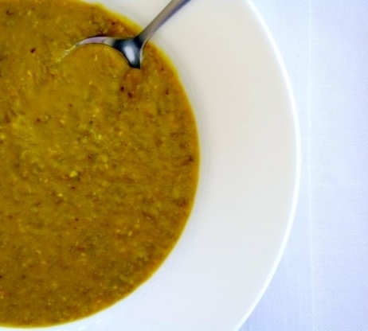
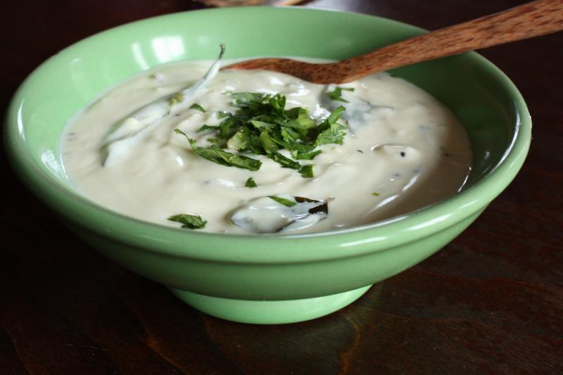

Appetizers

Pappadums (2 pieces) $2.00
The Pappadum is a delicious traditional crispy snack that is served either as an appetiser or with a main meal.
Lentil Soup $4.00
Ingredients:
- 1 1/2 cups mung beans or 1 1⁄2 cups red lentils or 1 1⁄2 cups yellow lentils
- 1 teaspoon turmeric
- 1/2 teaspoon cayenne pepper
- 1 teaspoon cumin
- 1/4 teaspoon cardamom
- 2-3 curry leaves or 2-3 bay leaves
- 6 cups chicken stock (preferably home-made) or 6 cups vegetable stock (preferably home-made)
- 3 tablespoons vegetable oil or 3 tablespoons ghee
- 2 teaspoons mustard seeds
- 2 garlic cloves, finely chopped
- salt and pepper
- 1/2 - 1 lemon
Method:
- Rinse the beans or lentils.
- Bring to a boil with the stock, turmeric, Cayenne, cumin, cardamom and curry/bay leaves.
- Let simmer until the beans or lentils are very soft (ca 30 minutes).
- If using bay leaves, remove them now. Curry leaves can be left in the soup.
- Run the soup quickly in a blender to a not too smooth consistency (or mash the lentils/beans with a ladle).
- Sautee the garlic and mustard seeds lightly in the fat and add to the soup.
- Let simmer for another 5 minutes.
- Add salt, pepper and squeezed lemon to taste.
- Serve hot with pita or paratha bread.
Beef Pan Roll (2 Pieces) $3.00
A Crepe like shell, wrapped around spiced mince meat, mixed with vegetables, and deep fried to a crisp. (No Recipe)
Yoghurt Raita $3.00
Ingredients
- 1 large unpeeled English hothouse cucumber, halved, seeded, coarsely grated
- 2 cups plain whole-milk yogurt
- 1/4 cup (packed) chopped fresh mint
- 1 teaspoon ground cumin
- 1/4 teaspoon plus pinch of cayenne pepper
Method:
- Wrap grated cucumber in kitchen towel and squeeze dry.
- Whisk yogurt, mint, cumin, and 1/4 teaspoon cayenne pepper in medium bowl to blend.
- Add cucumbers and toss to coat.
- Season raita to taste with salt and pepper.
- Cover and refrigerate at least 2 hours. (Can be prepared 1 day ahead. Keep refrigerated.)
- Sprinkle raita with pinch of cayenne pepper and serve.